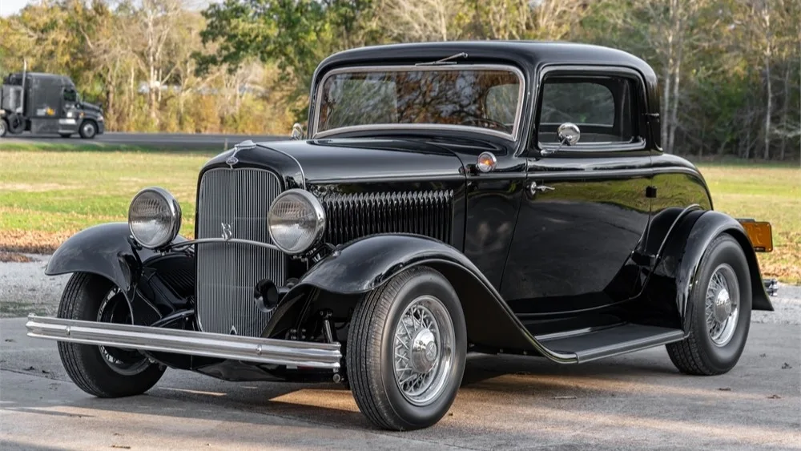
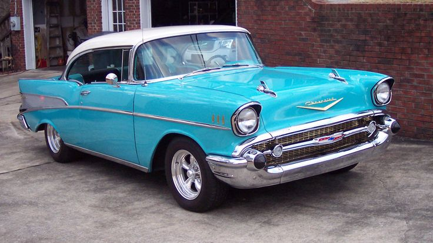
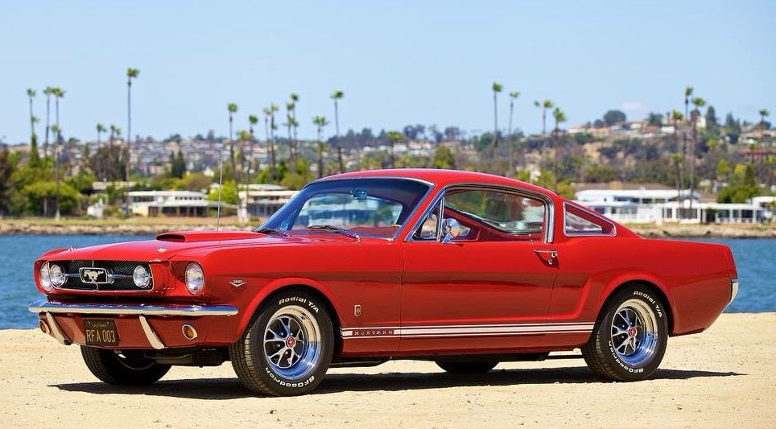

BENDY'S AUTO SALON
Тёмная элегантность на дорогах
Добро пожаловать в мир винтажных автомобилей и уникального стиля. Мы специализируемся на восстановленных классических автомобилях с характером и историей.
ПОЧЕМУ ВЫБИРАЮТ НАС
Ручная реставрация
Каждый автомобиль проходит полную реставрацию с сохранением оригинальных деталей и духа эпохи.
Гарантия подлинности
Все автомобили имеют подтверждённую историю и оригинальные документы. Никаких реплик.
Персональный подход
Для каждого клиента мы подбираем автомобиль, который соответствует его стилю и характеру.
ИЗ КОЛЛЕКЦИИ САЛОНА

1932 Ford Coupe
Полностью восстановленный хот-род в оригинальном стиле 50-х годов. Двигатель V8, ручная КПП.
Подробнее

1957 Chevrolet Bel Air
Легенда американского автопрома в идеальном состоянии. Все оригинальные детали сохранены.
Подробнее

1965 Mustang Fastback
Культовый мустанг в специальной "чёрной" серии. Мощность 325 л.с., редкая модификация.
Подробнее